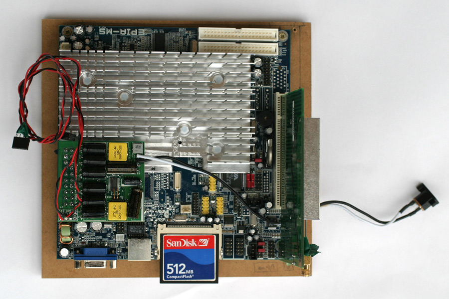
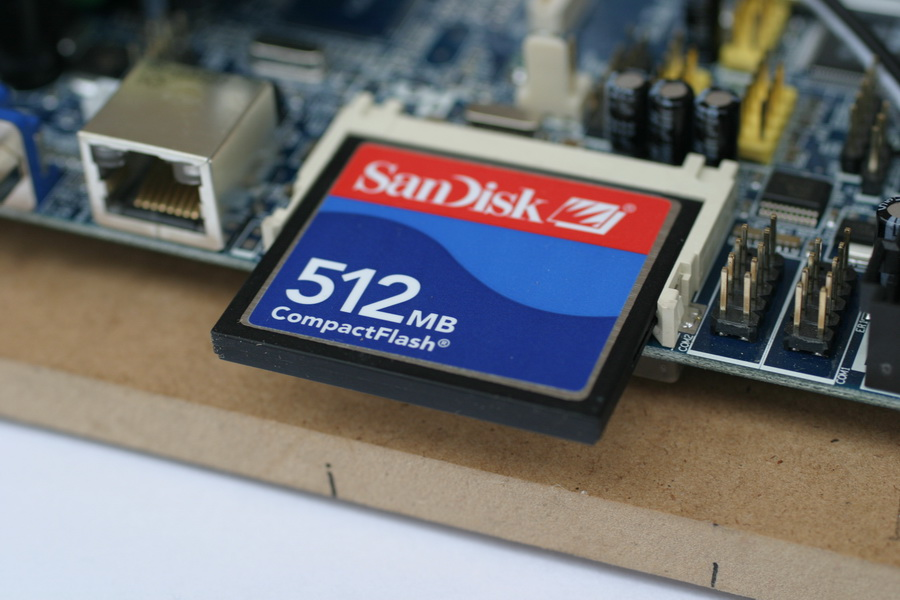
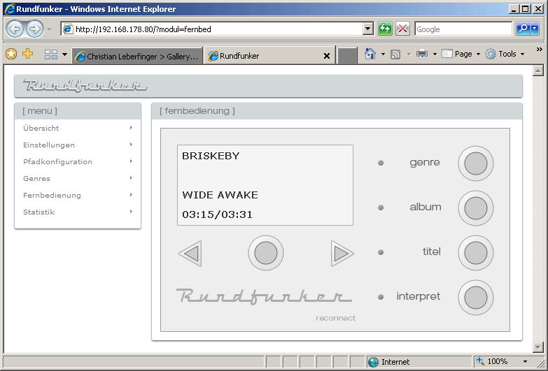
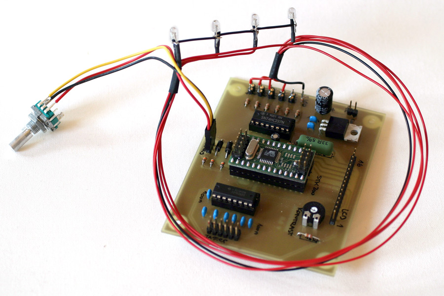
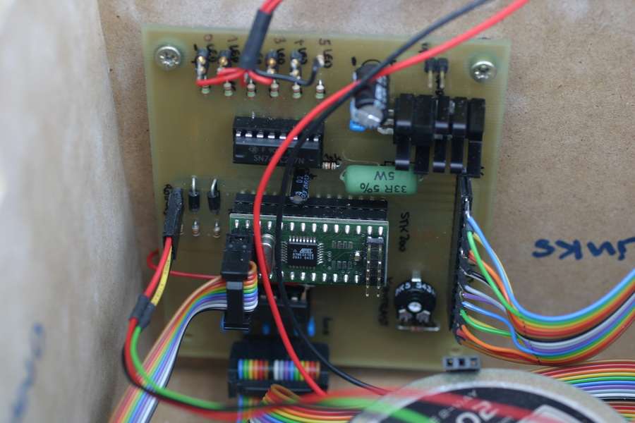
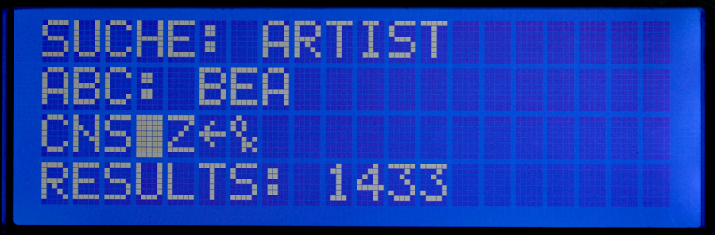
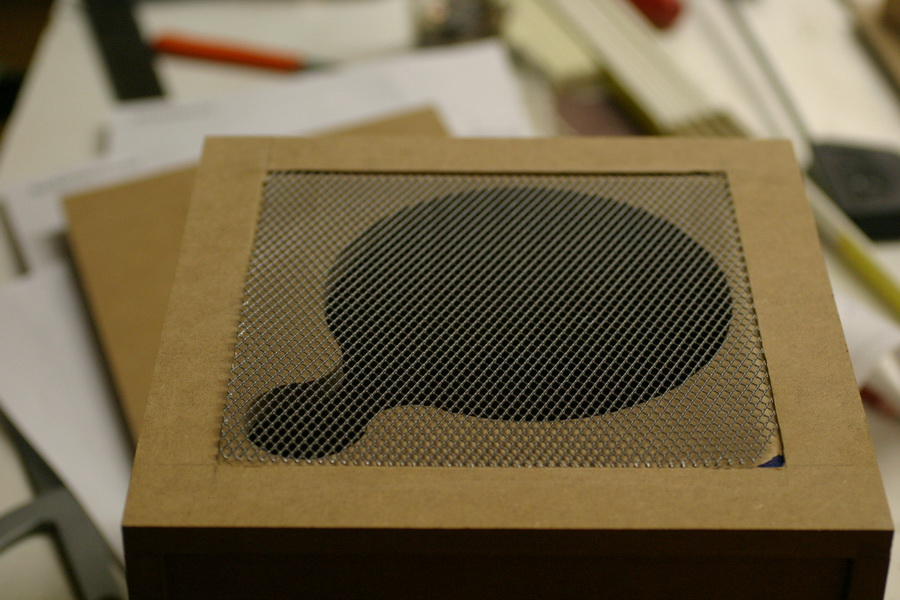
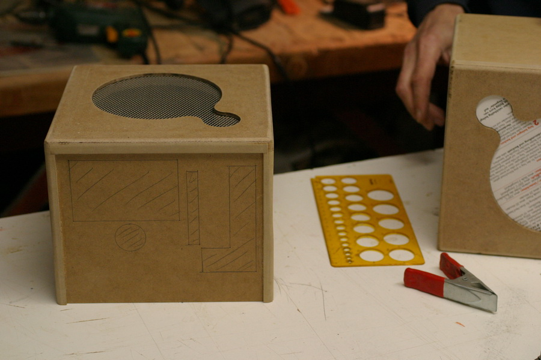
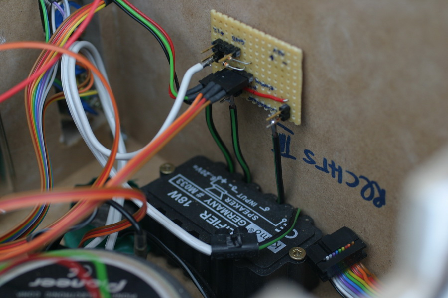

Rundfunker (WLAN MP3 Player) [english version]

Der Rundfunker ist ein stationärer MP3-Player, der das WLAN nach lokalen Audioquellen durchsucht und dort freigegebene Audio-Dateien abspielt. Er besitzt ein eingebautes 2-Wege-Lautsprecher-System, ein LC-Display und ein überraschend simples und gleichzeitig mächtiges Bedienkonzept. Dabei benötigt das Gerät keinerlei externe Peripherie, ein einfacher Stromanschluss genügt - die komplette Hardware befindet sich bereits im optisch ansprechenden Designer-Gehäuse mit edler Aluminium-Frontplatte.
Unser Fünf-Mann-Team (Mathias Bauer, Christoph Beckmann, Christian Leberfinger, Stefan Loibl, Jan Peuker) hat die komplette Software konzipiert, implementiert und als Open-Source zur Verfügung gestellt; außerdem haben wir zwei komplett funktionstüchtige Prototypen gebaut.
Die Idee, ein WLAN-Radio zu entwickeln, entstand aus dem Wunsch, die Vorteile eines Radiogeräts mit denen einer personalisierten Musiksammlung auf einem PC zu kombinieren. Ein UKW-Empfänger ist in der Regel kompakt, transportabel und unkompliziert zu bedienen; leider jedoch entspricht das Programm der verschiedenen Sender nicht unbedingt jedermanns Geschmack. Die mp3s auf dem heimischen PC würden eigentlich eine perfekte Alternative zum Radio-Einheitsbrei darstellen, allerdings haben sie den großen Nachteil, dass sie in der Regel auf einem mehr oder weniger unbeweglichen Rechner liegen und damit kaum außerhalb der Zimmergrenzen gehört werden können (ohne die Nachbarn zu verärgern).
Der Rundfunker ist hier eine elegante Lösung. Er ist ein mp3-Player in Radioform, der drahtlosen Zugriff auf alle mp3s bietet, die im lokalen Rechnernetz freigegeben sind. Auf diese Weise unterliegt er nicht den Volumenbeschränkungen der beliebten mp3-Player in USB-Stick-Form, die heutzutage Platz für etwa ein Gigabyte Musikdaten bieten: der Rundfunker kann über WLAN theoretisch auf mehrere Terabyte Musik zurückgreifen. Damit übertrifft er selbst portable mp3-Player mit eingebauten Festplatten (mit etwa 60 Gigabyte) um Längen.
Der Rundfunker ist zwar tragbar, aber nicht für den portablen Gebrauch wie bei einem Walkman gedacht. Sein Revier ist die Wohnung. Dies bringt diverse Vorteile mit sich. Das Gerät muss nicht mit einem winzigen Gehäuse à la iPod auskommen, sondern besteht aus einer kompakten Box von 21×21×18 Zentimetern, die genügend Volumen für das integrierte Zwei-Wege-Lautsprechersystem, eine edle Frontplatte mit leicht zu bedienenden Knöpfen und ein übersichtliches LC-Display bietet.
Ein typischer Anwendungsfall des Rundfunkers wäre folgender: im Arbeitszimmer im ersten Stock steht der PC mit einer Festplatte voller mp3-Dateien, die in der Küche im Erdgeschoss ohne Kabelverbindung wiedergegeben werden können. Dabei hat der Hörer zahlreiche Möglichkeiten, die Wiedergabe zu beeinflussen. Über das simple Bedienkonzept kann er beispielsweise sein Lieblingsalbum oder sein favorisiertes Genre suchen oder einfach durch die gesamte Musiksammlung blättern.
Um den Rundfunker in Betrieb zu nehmen, muss er lediglich über die Steckdose mit Strom versorgt werden. Damit er auch mp3-Dateien zum Wiedergeben finden kann, muss der oder die Quell-PCs angeschaltet sein und die Ordner, die die Musikfiles beinhalten, im Dateisystem freigegeben werden. Die Konfiguration des Systems (z.B. Einstellen der IP-Adressen) erfolgt über ein übersichtliches Web-Interface, das als zusätzliches Feature auch die komplette Fernsteuerung des Rundfunkers ermöglicht.
Mainboard
Unser Anliegen war es, ein komplett passiv gekühlts Motherboard zu verbauen. Wir haben uns für das VIA Epia MS 10000E LVDS entschlossen, da es COM- und Audio-Ports als Steckbrückenverbinder, einen PCI-Slot (für die WLAN-Karte) und einen Compact-Flash-Einschub bietet. Von der Compact-Flash-Karte booten wir Troubadix, eine selbst angepasste Knoppix-Variante.


Betriebssystem (Troubadix)
Als Betriebssystem kommt Troubadix, ein selbst gezüchtetes Knoppix-Derivat zum Einsatz, das im Gegensatz zu anderen Mini-Distributionen den 2.6er Kernel in der vollen Knoppix-Ausführung, MySQL 4.1, Apache2, PHP5, OpenSSH und die Sun-JRE 1.4.2 beinhaltet - allerdings kein X und dementsprechend auch keinen Window-Manager. Da Troubadix im Rundfunker von einer Compact-Flash-Karte gebootet wird, sind keine beweglichen Teile im Gehäuse, die bei einem Transport beschädigt werden könnten.

Troubadix ist nur ungefähr 200 MB groß - der restliche Speicherplatz auf der CF-Karte steht für unser Java-Programm and die dahinterliegende Datenbank zur Verfügung.
Konfiguration
Grundsätzliche Einstellungen können komfortabel über ein in PHP umgesetztes Webinterface getätigt werden. Außerdem kann der Rundfunker über ein Java-Applet in diesem Webinterface komplett fernbedient werden.

Grundsätzliche Einstellungen

Fernbedienung (Java-Applet)
LCD, Jog-Dial und LEDs an das Epia anschließen
Verbunden werden Java-Programm und Hardware über eine kleine Platine, die wir selbst entwickelt haben. Darauf sitzt ein von uns programmierter Microcontroller, der über die serielle Schnittstelle mit dem Motherboard kommuniziert. Der Microcontroller kann so die Benutzereingaben an unsere Software weiterleiten und empfängt im Gegenzug die Inhalte, die er an das LC-Display weiterleiten soll.
Die Entwicklung dieser Platine und der Software, die auf dem Microcontroller läuft, war die Aufgabe, die uns anfangs am schwersten gefallen ist, da wir uns mit solchen Dingen noch nie zuvor beschäftigt hatten. Wir haben Eagle eingesetzt, um die Schaltkreise zu entwerfen und entwickelten die Microcontroller-Software für unseren Atmel Atmega 168 mit AVR Studio. Viel Zeit kostete die Fehlentscheidung, den Atmega 168 zur verwenden, da dieser leider nicht genügend Anschluss-Pins zur Verfügung stellt. Da wir uns außerdem für ein uC-Modul entschieden hatten, dass relativ teuer (ca. 50 EUR) war, wollten wir es nicht einfach durch einen größeren uC ersetzen (Atmega 32 oder ähnlich). So mussten wir die Anschlussmöglichkeiten mithilfe eines Schieberegisters und eines 8-to-3-Decoders "aufbohren". Unglücklicherweise haben wir das Datenblatt des Schieberegisters anfänglich auch noch missverstanden, so dass wir auch hier nachträglich noch kleine Löt-Workarounds durchführen mussten ;)

Die bestückte Anschluss-Platine

Schaltplan der Platine

Die fertige und eingebaute Platine im Gehäuse des Rundfunkers
Benutzer-Anwendung
Auf diesem System aufgesetzt ist ein selbst konzipiertes und implementiertes Java-Programm, das sowohl das Suchen und Abspielen der Audiodateien aus dem WLAN als auch die Bedienung des Geräts ermöglicht. Bei der Konzeption dieser Software wurde besonders auf eine sauber objektorientierte Struktur und leichte Erweiterbarkeit geachtet. Normalerweise würden wir jetzt ein paar Screenshots unseres Programms herzeigen; in diesem speziellen Fall gibt es natürlich keinen "Screen" im herkömmlichen Sinne - deswegen einige Photos von Inhalten unseres LC-Displays:

Der Standard-Bildschirm während Liedwiedergabe (vorheriger/nächster Song bei Betätigung des Jog-Dials)

Interpreten-Liste - durchblättern und auswählen mittels Jog-Dial (ALPS rotary encoder)

Der komfortabelste Weg, einen Interpreten aus einer großen Liste zu wählen: Rundfunker Speller
Hardware/Software
Hardware:
- ein VIA Epia Mini-ITX-Motherboard mit 1 GHz CPU und 256 MB RAM
- ein 4 x 20 Zeichen LC-Display
- eine selbst entwickelte Platine mit elektronischen Bauteilen zum Anschluss von Display, Tastern, LEDs und Jog-Dial.
- ein selbst programmierter Microcontroller zur Ansteuerung der Hardware
- ein 2-Wege-Lautsprecher-System aus dem Car-Hifi-Bereich, das für gute Klangqualität sorgt
Software:
- die Microcontroller-Software zur Ansteuerung der Hardware (in C implementiert)
- das Java-Programm zum Handling des Bedienkonzepts und Abspielen der Audio-Dateien
- die PHP-Webanwendung für Fernbedienung und Konfiguration des Rundfunkers
- Troubadix, unsere selbst entwickelte Knoppix-Variante
Gehäuse
Das Gehäuse des Rundfunkers haben wir aus MDF-Platten (mitteldichte Faserplatte) aus dem Baumarkt gebaut. Wir hatten es zuvor in einem 3D-Programm entworfen, dann gebaut und anschließend seidenmatt-weiß lackiert. Die edle Aluminium-Frontplatte, die wir entworfen hatten, wurde von einer Spezialfirma aus Berlin gefertigt.

Zwei Werkzeuge,
die wir beim Bau des Gehäuses eingesetzt haben: Handoberfräse und Stichsäge

Fast fertig - nur noch etwas leer ;)

Das Schutzgitter für die Lautsprecher. Die Aussparung für Lautsprecher und Gitter haben wir gefräst

Fertig eingepasste Schutzgitter und die angezeichneten Aussparungen für die Anschlusskabel der Bedienelemente

Stichsäge in Aktion

Die fertig lackierten Gehäuse
unserer beiden Prototypen

Einblick von unten;)

Der fertige Rundfunker
Audio-Bauteile
Wir haben einen kleinen 18-Watt-Verstärker für die Ansteuerung unserer 2-Wege-Lautsprecher von Pioneer eingebaut.

Eine kleine Platine zum Anschluss des Verstärkers
Projekt-Management
Alle Entwicklungsschritte wurden mit einem Ticketsystem (Trac) koordiniert, vom Versionierungssystem Subversion verwaltet und im angebundenen Wiki dokumentiert. Alle Quelltexte, Schaltpläne und Dokumente, die während der Entwicklungsphase angefallen sind, stehen auf unserem Projekt-Server für jeden zum Einblick: https://developer.berlios.de/projects/rundfunker/
Mehr Bilder gibt es hier.